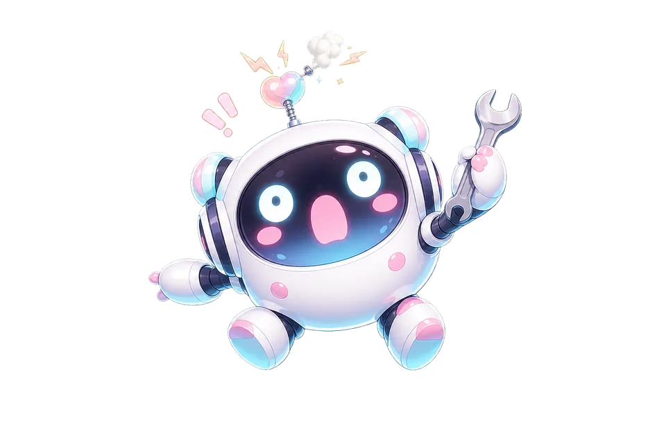

GameSpec Lab無料ゲームセンス診断とゲーマーMBTI
ゲームセンス診断とゲーマーMBTI診断から、PCゲームでの強み、向いてる役割、相性のいい相手タイプまで順番に見つけられます。


FIND BY PROBLEM
ゲームの悩みから読む
「勝てない」「上達しない」「FPSが向いてるか不安」——よくある悩みから、原因の見方と次の一手をまとめた読み物です。


EXPLORE
もっと探す
読み物、デバイス選び、タイプ図鑑は、それぞれの入口ページからまとめて見られます。

FAQ
よくある質問
GameSpec Labでは何を診断できますか？
GameSense Scan 8でゲームセンスの8能力を可視化し、ゲーマーMBTIでゲーム中の判断や役割の傾向を16タイプで確認できます。
診断は無料で使えますか？
どちらの診断も無料で利用できます。結果ページ内には広告リンクを含む場合があります。
診断結果から次に何を見ればいいですか？
結果一覧、読み物ガイド、各タイプの個別解説ページへ進むと、向いている役割や相性のいい相手をさらに深く確認できます。